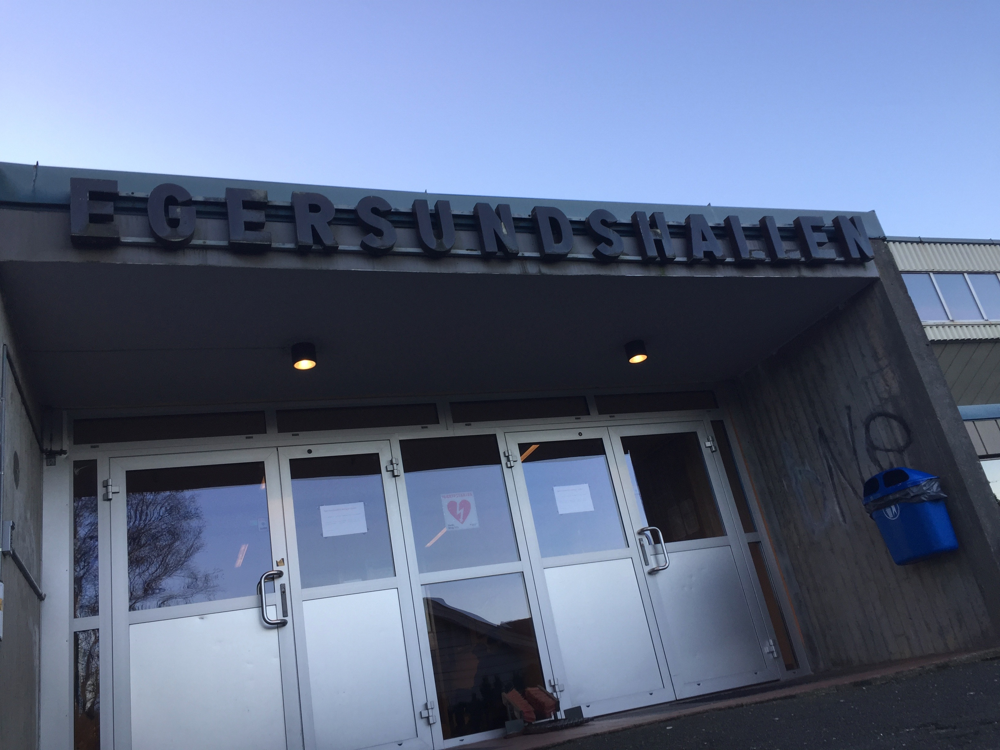

Bakkelia Håndballforenging er en av landets eldste gjenværende håndballforeninger. Foreningen vår ble startet opp i 1896 og vi har siden den gang stilt lag i de fleste klasser her til lands. Vi har også blitt flyttet litt rundt på gjennom årene, laget startet opp på Bakkelia, men vi spiller nå de fleste kampene våre i Egersundshallen i Egersund. Egersundshallen er plasert på Husabø, rett ved siden av EIK fotball sin storstue "Idrettsmarken".
Det øverste nivået vi stiller på for øyeblikket er 4 divisjon avdeling 2 i norsk herreserie, her spiller vi med våre rivaler Egersund som fram til årets sesong også spilte sine kamper i Egersundshallen, noe som skapte livlige kamper når vi spilte mot dem Nå spiller de i Espelandhallen som ligger på andre siden av byen, noe som gjør at vi får flere trenininger til lagene våre i Egersundshallen. Vil dere vite mer om håndball kam man lese mer på NHF sin hjemmeside
Bakkelia håndballforenings webside. Administrert av Magnus og Thomas.